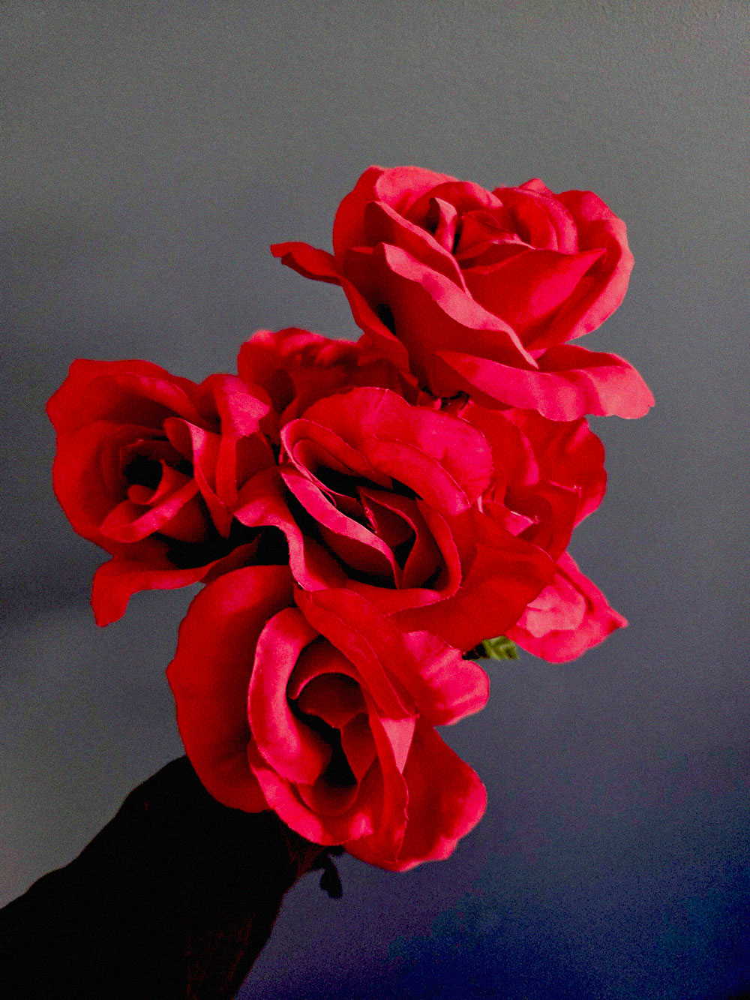

So… I’ve got a lot to say, and I don’t even know where to start.
I spent the last month avoiding Finn. I would hang out with Vega sometimes, but she was starting to get pushy about it. So, I just isolated myself. Every time I was around Finn, I’d get full blown panic attacks and I couldn’t handle it. Fuck, I even called out of work when I knew that Finn wasn’t at school or work, afraid that he’d show up at my work.
And then the text messages starting coming. They didn't stop!They kept coming, and he wouldn’t leave me alone. It was starting to get intense, and my panic attacks were getting more intense. My dreams were becoming even more vivid.
And then Vega invited me over to her place. Fucking asshole lied to me and promised me that Finn wouldn’t be there. So, she lured me to her place, and then locked me in the apartment, refusing to let me leave until I spoke with him. I should have known better!
It’s okay, because things ended up okay.
I was standing in Finn’s room in front of him. He looked so serious, and I was terrified of what was about to happen. Finn asked about the kiss again, and I felt my anxiety come back. I was trying not to cry, so I kept staring at him, no saying a word. And then he said it…
He told me that Vega told him about how I felt. That’s when I started crying. Omg, I was fucking sobbing. And Finn came over, and cupped my cheeks, and that’s when he said it.
“Cedar, I love you too.”
My heart stopped when I heard those words. Holy fuck, I was so close to passing out. At least that’s how I felt in the moment. And of course I didn’t believe the words that he was saying. I was trying to tell him off, reminding him that there was no way he could feel the same way.
And you know what the craziest part of all of this is? Finn has had feelings for me since the day we met. That first day he met me? Yeah, he was trying to ask me out. How was I supposed to know that?
Anyways. He kept telling me that everything was real. That his feelings for me were real. And then… he kissed me. My heart fluttered in my chest when he did it. And I kissed him back!
And then he asked me to be his partner. I couldn’t believe it. I had a boyfriend. The most wonderful boyfriend ever. He took me out on our first date and it was perfect, aside from when he took me on the ferris wheel and found out that I was deathly afraid of heights. But otherwise, the day was perfect. He’s perfect.
My life has changed so drastically since I met Finn. It’s not perfect. Love doesn’t fix all the struggles I experience, that’ll be a long road ahead of me. But love and support makes it all easier. This is exactly what I needed to finally feel confident in myself. I am finally able to heal and feel free from the shackles of depression.
I am finally free.
Cedar